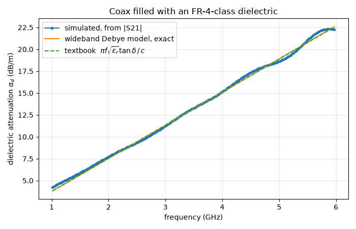
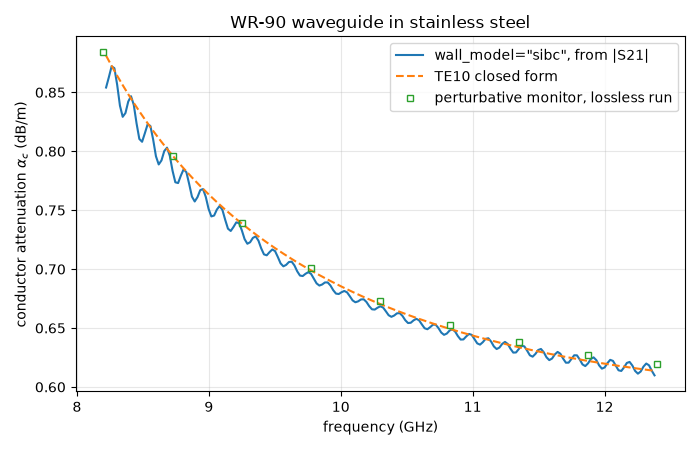
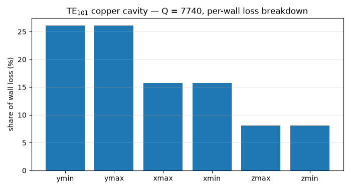

Note
Go to the end to download the full example code.
Conductor and dielectric losses#
Every structure in this series so far was lossless: perfect metal, perfect dielectrics. That is the right starting point — S-parameters of well-matched devices are dominated by geometry — but real answers to real questions need dissipation: how many dB does this cable eat, how hot does this filter run, what is the Q of this cavity?
Loss enters an electromagnetic model in two physically distinct places, and Magnelio treats them differently:
Dielectric loss happens in the volume. A lossy material is simply part of the field solution — declare it, and every result (S-parameters included) carries the loss.
Conductor loss happens in a skin depth of micrometres, far below any reasonable cell size. It comes in two models: the default treats walls as perfect conductors and books the dissipated power afterwards from the tangential magnetic field (fast, and exactly what a resonator Q needs) — or
wall_model="sibc"folds a surface impedance into the time stepping itself, so that the S-parameters come out lossy.
This tutorial exercises all three paths, each against a closed-form reference: a coax filled with a lossy PCB-class dielectric, a stainless-steel waveguide, and the Q of a copper cavity.
A dielectric from datasheet numbers#
Substrate datasheets give two numbers: the relative permittivity and the loss tangent, both at a reference frequency — say εᵣ = 4.3 and tan δ = 0.02 at 3 GHz for an FR-4-class laminate. It is tempting to read that as “tan δ = 0.02 at every frequency”, but such a material cannot exist: causality (the Kramers–Kronig relations) demands that a constant loss angle is paid for with a logarithmic fall of εᵣ over frequency. The standard causal reading of a datasheet — used by every time-domain solver — is the wideband Debye model: a chain of relaxation poles spread over many decades that holds tan δ nearly constant across the band while εᵣ drifts exactly as physics requires.
djordjevic_sarkar() builds
that model from the two datasheet numbers alone.
import matplotlib.pyplot as plt
import numpy as np
import magnelio as mio
from magnelio import geo, materials, monitors, ports, post
from magnelio.constants import *
eps_r, tan_d, f_ref = 4.3, 0.02, 3e9
model_d = materials.DispersionModel.djordjevic_sarkar(eps_r, tan_d, f_ref=f_ref)
fr4 = mio.Material.dispersive("FR-4 class", model_d)
print(f"{len(model_d.poles)} relaxation poles, eps_inf = {model_d.eps_inf:.3f}")
19 relaxation poles, eps_inf = 3.950
The model spreads its relaxation over nine decades — evaluated inside
our band it holds tan δ within ±2 % of the datasheet value. Its
high-frequency limit eps_inf ≈ 3.95 is below the in-band 4.3:
that is the Kramers–Kronig toll, not an error.
The test vehicle is the RG-58 coax geometry from the earlier tutorials, with the polyethylene swapped for this material. At these loss levels 24 mm of line eats a measurable half dB.
r_i, r_o, L_coax = 0.405e-3, 1.475e-3, 24e-3
f_max = 6e9
pec = mio.Material.pec()
dielectric = geo.Cylinder(origin=(0, 0, 0), radius=r_o, height=L_coax, axis="z", material=fr4)
inner = geo.Cylinder(origin=(0, 0, 0), radius=r_i, height=L_coax, axis="z", material=pec)
model = mio.GeometryModel(background=pec)
model.add(geo.Difference(dielectric, inner))
model.add(inner)
model.add_port(ports.PortWaveguide(name="port1", plane="zmin"))
model.add_port(ports.PortWaveguide(name="port2", plane="zmax"))
mesh = mio.Mesh.from_geometry(
model, mio.MeshControl(max_cell_size=0.16e-3, min_cell_size=0.16e-3), f_max=f_max
)
result = mio.AnalysisScatteringTD(mesh=mesh, f_max=f_max, verbose=False).run(excited=["port1"])
On a uniform matched line, |S21| = e^(−αL), so one transmission
measurement hands us the attenuation constant. Two closed forms to
compare against: the exact α of the wideband Debye model (from its
complex permittivity), and the textbook low-loss formula
α_d = π·f·√εᵣ·tan δ / c for a constant loss tangent — on this
material the two are nearly indistinguishable, which is the point of
the causal model.
One honest footnote: the port launches the mode computed at the
material’s high-frequency permittivity, so on a strongly dispersive
line the port is slightly mismatched to the in-band wave — here
|S11| stays below −26 dB and shows up only as a gentle ripple.
f = result.f_axis
alpha_num = -np.log(np.abs(result.S("port2", "port1"))) / L_coax
eps_w = model_d.evaluate(2 * np.pi * f)
alpha_model = (2j * np.pi * f / C0 * np.sqrt(eps_w)).real
alpha_textbook = np.pi * f * np.sqrt(eps_r) * tan_d / C0
NP2DB = 20 / np.log(10) # nepers -> dB
band = (f > 1e9) & (f < 6e9)
fig, ax = plt.subplots(figsize=(7, 4.5))
ax.plot(f[band] / 1e9, NP2DB * alpha_num[band], "o-", ms=3, label="simulated, from |S21|")
ax.plot(f[band] / 1e9, NP2DB * alpha_model[band], label="wideband Debye model, exact")
ax.plot(
f[band] / 1e9,
NP2DB * alpha_textbook[band],
"--",
label=r"textbook $\pi f \sqrt{\epsilon_r} \tan\delta \,/\, c$",
)
ax.set_xlabel("frequency (GHz)")
ax.set_ylabel(r"dielectric attenuation $\alpha_d$ (dB/m)")
ax.set_title("Coax filled with an FR-4-class dielectric")
ax.grid(alpha=0.3)
ax.legend()
fig.tight_layout()
k5 = int(np.argmin(np.abs(f - 5e9)))
print(f"alpha at 5 GHz: {NP2DB * alpha_num[k5]:.1f} dB/m (model: {NP2DB * alpha_model[k5]:.1f})")

alpha at 5 GHz: 18.7 dB/m (model: 19.0)
From 1.6 GHz up the simulated attenuation tracks the model within a few percent; below that, α·L shrinks toward the ripple floor and the extraction gets noisy — measuring a hundredth of a dB rides on the port match, in simulation exactly as on a bench.
Conductor loss: one physics, two models#
Metal walls dissipate in a skin depth — copper at 10 GHz: 0.66 µm.
No volume grid resolves that, and none has to: the loss per area
follows from the tangential magnetic field and the surface
resistance R_s = √(πfµ/σ) alone. What differs is when that
formula is applied.
The perturbative default (used automatically by the wall-loss
tools) keeps every wall a perfect conductor during the run and books
½·R_s·|H_tan|² per wall patch afterwards. The fields — and the
S-parameters — stay lossless.
The surface-impedance boundary (wall_model="sibc") replaces
the perfect-conductor wall by its causal surface impedance inside
the time stepping. The wave loses energy as it propagates, and
|S21| carries the attenuation.
The fixture: a WR-90 rectangular waveguide, 100 mm of it, in stainless steel (σ = 1.45·10⁶ S/m — about 6× the surface resistance of copper, a realistic worst case and comfortably measurable). Flat walls also mean the closed form is trustworthy across the band.
a_wg, b_wg, L_wg = 22.86e-3, 10.16e-3, 100e-3
sigma_steel = 1.45e6
f_lo, f_hi = 8.2e9, 12.4e9
air = mio.Material.air()
wg = mio.GeometryModel(background=air)
wg.add(geo.Brick(origin=(0, 0, 0), size=(a_wg, b_wg, L_wg), material=air))
wg.add_port(ports.PortWaveguide(name="port1", plane="zmin", n_modes=1))
wg.add_port(ports.PortWaveguide(name="port2", plane="zmax", n_modes=1))
wg_mesh = mio.Mesh.from_geometry(wg, mio.MeshControl(min_nodes_per_wavelength=18), f_max=f_hi)
def run_waveguide(**wall_kwargs):
monitor = monitors.MonitorWallLoss(
freqs=np.linspace(f_lo, f_hi, 9),
reference_plane=("z", 5e-3),
sigma=sigma_steel,
bc_faces=("xmin", "xmax", "ymin", "ymax"),
)
analysis = mio.AnalysisScatteringTD(
mesh=wg_mesh,
f_min=f_lo,
f_max=f_hi,
monitors=(monitor,),
verbose=False,
**wall_kwargs,
)
return analysis.run(excited=["port1"]), monitor
First the default. The monitor needs to know which conductor it is
metering — the walls here are the domain boundary, so bc_faces
lists them and sigma supplies their conductivity (a lossy-metal
solid would carry its own). The reference plane turns the booked
wall power into a fraction of the power flowing down the guide.
perturbative run: max | |S21| - 1 | = 1.9e-04
|S21| = 1 to a few 10⁻⁴: the run itself was lossless, yet the
monitor already knows the walls would eat about 2 % of the power —
the perturbative bargain in one sentence. (The factor 2: the
fraction is a power ratio, α is a field amplitude rate.)
Now the same guide with the surface impedance in the update.
res_sibc, mon_sibc = run_waveguide(wall_model="sibc", wall_sigma=sigma_steel)
f_wg = res_sibc.f_axis
alpha_sibc = -np.log(np.abs(res_sibc.S("port2", "port1"))) / L_wg
k = 2 * np.pi * f_wg / C0
beta = np.sqrt(np.maximum(k**2 - (np.pi / a_wg) ** 2, 0.0))
R_s = np.sqrt(np.pi * f_wg * MU0 / sigma_steel)
with np.errstate(divide="ignore", invalid="ignore"):
alpha_te10 = R_s / (a_wg**3 * b_wg * beta * k * ETA0) * (2 * b_wg * np.pi**2 + a_wg**3 * k**2)
in_band = (f_wg > f_lo) & (f_wg < f_hi)
fig, ax = plt.subplots(figsize=(7, 4.5))
ax.plot(
f_wg[in_band] / 1e9,
NP2DB * alpha_sibc[in_band],
label='wall_model="sibc", from |S21|',
)
ax.plot(f_wg[in_band] / 1e9, NP2DB * alpha_te10[in_band], "--", label="TE10 closed form")
ax.plot(
mon_pec.f / 1e9,
NP2DB * alpha_pert,
"s",
ms=5,
fillstyle="none",
label="perturbative monitor, lossless run",
)
ax.set_xlabel("frequency (GHz)")
ax.set_ylabel(r"conductor attenuation $\alpha_c$ (dB/m)")
ax.set_title("WR-90 waveguide in stainless steel")
ax.grid(alpha=0.3)
ax.legend()
fig.tight_layout()
ratio = alpha_sibc[in_band] / alpha_te10[in_band]
print(f"sibc vs closed form across the band: {ratio.min():.3f} .. {ratio.max():.3f}")

sibc vs closed form across the band: 0.969 .. 1.009
Three independent estimates of the same physics — the surface impedance marching in the update, the perturbative bookkeeping on a lossless run, and the closed form — agree within two percent.
Which model when? If the S-parameters must carry the loss (an
attenuator, insertion loss of a filter, anything driven), use
wall_model="sibc". If the question is a loss budget or a Q,
the perturbative tools answer it from a lossless run — and several
material variants can be evaluated from one solve, since the fields
never change. One caveat travels with both models on a Cartesian
grid: sharply curved conductors need a handful of cells across the
radius before the sampled wall field — and with it α — is trustworthy;
the flat walls here book exactly.
The Q of a cavity#
For resonators the natural loss figure is the quality factor. The
eigenmode solver finds the lossless modes exactly as in the
eigenmode tutorial; wall_loss_Q() then books the
perturbative wall loss of one mode and returns
Q = ω·W / P_loss. The reference: the classic closed form for
the TE₁₀₁ mode of a rectangular copper cavity.
a_c, b_c, d_c = 20e-3, 10e-3, 25e-3
sigma_cu = 5.8e7
cavity = mio.GeometryModel(background=air)
cavity.add(geo.Brick(origin=(0, 0, 0), size=(a_c, b_c, d_c), material=air))
f101 = C0 / 2 * np.sqrt((1 / a_c) ** 2 + (1 / d_c) ** 2)
cav_mesh = mio.Mesh.from_geometry(
cavity, mio.MeshControl(min_nodes_per_wavelength=20), f_max=1.2 * f101
)
modes = mio.AnalysisEigenmode(mesh=cav_mesh, n_modes=5, verbose=False).run()
q = post.wall_loss_Q(modes, mode=0, sigma=sigma_cu)
k101 = 2 * np.pi * modes.frequencies[0] / C0
R_s_cu = np.sqrt(np.pi * modes.frequencies[0] * MU0 / sigma_cu)
Q_ref = (
(k101 * a_c * d_c) ** 3
* b_c
* ETA0
/ (2 * np.pi**2 * R_s_cu * (2 * a_c**3 * b_c + 2 * b_c * d_c**3 + a_c**3 * d_c + a_c * d_c**3))
)
print(f"TE101 at {modes.frequencies[0] / 1e9:.3f} GHz (analytical {f101 / 1e9:.3f} GHz)")
print(f"wall_loss_Q: {q.Q:.0f} closed form: {Q_ref:.0f} ratio {q.Q / Q_ref:.3f}")
TE101 at 9.585 GHz (analytical 9.598 GHz)
wall_loss_Q: 7740 closed form: 7687 ratio 1.007
Within one percent of the closed form. The result also knows where
the power goes — per_tag splits the wall loss by face, and the
breakdown mirrors the mode: the two broad walls see the full
tangential magnetic field of TE₁₀₁ and take half the loss between
them; the four side walls, each touched by only one H component,
share the rest.
tags = sorted(q.per_tag, key=q.per_tag.get, reverse=True)
shares = [q.per_tag[t] / sum(q.per_tag.values()) for t in tags]
fig, ax = plt.subplots(figsize=(7, 3.8))
ax.bar(range(len(tags)), [100 * s for s in shares], color="C0")
ax.set_xticks(range(len(tags)), tags)
ax.set_ylabel("share of wall loss (%)")
ax.set_title(f"TE$_{{101}}$ copper cavity — Q = {q.Q:.0f}, per-wall loss breakdown")
ax.grid(alpha=0.3, axis="y")
fig.tight_layout()

Where to go from here#
Everything above extends without new concepts:
Lossy metal solids.
lossy_metal()declares a conductor with its σ; both wall-loss models pick the value up from the material, no override needed.Surface roughness. Real copper foil is rough, and roughness raises the effective surface resistance — by a factor approaching 2 at millimetre-wave frequencies. The standard correction models (
Hammerstad,Huray) plug into the sameroughness/wall_roughnesshooks of every path shown here.Dielectric loss in any structure. The wideband Debye material from the first section is an ordinary material — put it under a microstrip or into a filter and the S-parameters carry the loss automatically.
The next tutorial leaves single simulations behind: parameter sweeps and optimization with ordinary Python loops.
Total running time of the script: (0 minutes 27.095 seconds)